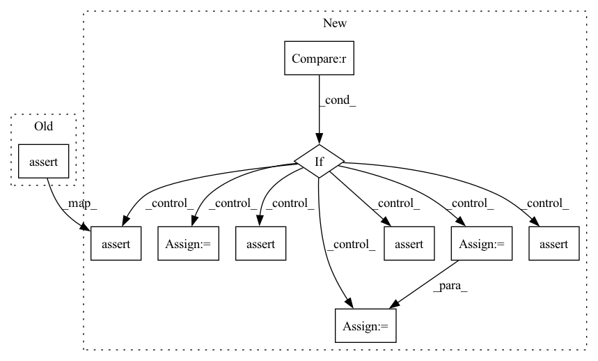

Pattern ID :26143

Before Change
// only support fused BN
assert bn_op.type == "FusedBatchNormV3"
assert len(bn_op.inputs) == 5
beta_read = bn_op.inputs[constants.BN_OP_PARAM_INDICES["beta"]].op
After Change
(is mul_1 op inside BN scope)
:return: beta read op
if bn_op.type in ["Mul"]:
// For regular BN
// mul_1 -> add_1 <-- sub <-- beta_read
assert len(bn_op.outputs) >= 1, _BN_STRUCTURE_ERROR_MSG
add_1 = bn_op.outputs[0].consumers()[0]
assert len(add_1.inputs) >= 2, _BN_STRUCTURE_ERROR_MSG
sub = add_1.inputs[1].op
assert len(sub.inputs) >= 1, _BN_STRUCTURE_ERROR_MSG
beta_read = sub.inputs[0].op
elif bn_op.type in ["FusedBatchNormV3"]:
assert len(bn_op.inputs) == 5
beta_read = bn_op.inputs[constants.BN_OP_PARAM_INDICES["beta"]].op
if beta_read.type == "Switch": // tf slim bn using training tensor form
beta_read = beta_read.inputs[0].op
assert "read" in beta_read.name
else:
logger.error("Error, unknown BN op")
assert False
assert beta_read.type in ["ReadVariableOp", "Identity"] // Will be identity for tf slim BNs
return beta_read
In pattern: SUPERPATTERN
Frequency: 4
Non-data size: 10
Instances
Fragment ID: 78795954
Project Name: quic/aimet
Commit Name: 04a3d26199c86efdb24da756ab9210e050855d14
Time: 2020-05-21
Author: quic_klhsieh@quicinc.com
File Name: TrainingExtensions/tensorflow/src/python/aimet_tensorflow/utils/op/fusedbatchnorm.py
M Class Name: BNUtils
N Class Name: BNUtils
M Method Name: get_beta_read_op(1)
N Method Name: get_beta_read_op(1)
M Parent Class:
N Parent Class:
M File Name: TrainingExtensions/tensorflow/src/python/aimet_tensorflow/utils/op/fusedbatchnorm.py
N File Name: TrainingExtensions/tensorflow/src/python/aimet_tensorflow/utils/op/fusedbatchnorm.py
M Start Line: 112
M End Line: 117
N Start Line: 112
N End Line: 131
'>
Before Change
// Inputs contains the shapes of two matrices.
input_shapes = [v.shape for v in inputs]
assert len(input_shapes) == 2, input_shapes
assert input_shapes[0][-1] == input_shapes[1][-2], input_shapes
flops = reduce(operator.mul, input_shapes[0]) * input_shapes[-1][-1]
return flops
After Change
assert len(input_shapes) == 2, input_shapes
// There are three cases: 1) gemm, 2) gemv, 3) dot
if all(len(shape) == 2 for shape in input_shapes):
// gemm
assert input_shapes[0][-1] == input_shapes[1][-2], input_shapes
elif all(len(shape) == 1 for shape in input_shapes):
// dot
assert input_shapes[0][0] == input_shapes[1][0], input_shapes
// expand shape
input_shapes[0] = torch.Size([1, input_shapes[0][0]])
input_shapes[1] = torch.Size([input_shapes[1][0], 1])
else:
// gemv
if len(input_shapes[0]) == 1:
assert input_shapes[0][0] == input_shapes[1][-2], input_shapes
input_shapes.reverse()
else:
assert input_shapes[1][0] == input_shapes[0][-1], input_shapes
// expand the shape of the vector to [batch size, 1]
input_shapes[-1] = torch.Size([input_shapes[-1][-1], 1])
flops = reduce(operator.mul, input_shapes[0]) * input_shapes[-1][-1]
return flops
'>
Fragment ID: 78796000
Project Name: hpcaitech/colossalai
Commit Name: ffcdbf0f6519366f322f2809e19f741492779c6c
Time: 2023-04-04
Author: 72588413+YuliangLiu0306@users.noreply.github.com
File Name: colossalai/_analyzer/_subclasses/flop_tensor.py
M Class Name: AnonimousClass
N Class Name: AnonimousClass
M Method Name: matmul_flop_jit(2)
N Method Name: matmul_flop_jit(2)
M Parent Class:
N Parent Class:
M File Name: colossalai/_analyzer/_subclasses/flop_tensor.py
N File Name: colossalai/_analyzer/_subclasses/flop_tensor.py
M Start Line: 238
M End Line: 238
N Start Line: 236
N End Line: 260
'>
Before Change
// Inputs contains the shapes of two matrices.
input_shapes = [v.shape for v in inputs]
assert len(input_shapes) == 2, input_shapes
assert input_shapes[0][-1] == input_shapes[1][-2], input_shapes
flops = reduce(operator.mul, input_shapes[0]) * input_shapes[-1][-1]
return flops
After Change
assert len(input_shapes) == 2, input_shapes
// There are three cases: 1) gemm, 2) gemv, 3) dot
if all(len(shape) == 2 for shape in input_shapes):
// gemm
assert input_shapes[0][-1] == input_shapes[1][-2], input_shapes
elif all(len(shape) == 1 for shape in input_shapes):
// dot
assert input_shapes[0][0] == input_shapes[1][0], input_shapes
// expand shape
input_shapes[0] = torch.Size([1, input_shapes[0][0]])
input_shapes[1] = torch.Size([input_shapes[1][0], 1])
else:
// gemv
if len(input_shapes[0]) == 1:
assert input_shapes[0][0] == input_shapes[1][-2], input_shapes
input_shapes.reverse()
else:
assert input_shapes[1][0] == input_shapes[0][-1], input_shapes
// expand the shape of the vector to [batch size, 1]
input_shapes[-1] = torch.Size([input_shapes[-1][-1], 1])
flops = reduce(operator.mul, input_shapes[0]) * input_shapes[-1][-1]
return flops
'>
Fragment ID: 78795956
Project Name: hpcaitech/colossalai
Commit Name: 90a9fdd91d12cdfb03d4eaf88ff67a47cbe65f33
Time: 2023-02-07
Author: 70263930+Cypher30@users.noreply.github.com
File Name: colossalai/fx/profiler/opcount.py
M Class Name: AnonimousClass
N Class Name: AnonimousClass
M Method Name: matmul_flop_jit(2)
N Method Name: matmul_flop_jit(2)
M Parent Class:
N Parent Class:
M File Name: colossalai/fx/profiler/opcount.py
N File Name: colossalai/fx/profiler/opcount.py
M Start Line: 23
M End Line: 23
N Start Line: 21
N End Line: 45
'>
Before Change
// only support fused BN
assert bn_op.type == "FusedBatchNormV3"
assert len(bn_op.inputs) == 5
gamma_read = bn_op.inputs[constants.BN_OP_PARAM_INDICES["gamma"]].op
After Change
(is mul_1 op inside BN scope)
:return: gamma read op
if bn_op.type in ["Mul"]:
// For regular BN
// mul_1 <-- mul <-- gamma_read <-- gamma_tensor
assert len(bn_op.inputs) >= 2, _BN_STRUCTURE_ERROR_MSG
mul = bn_op.inputs[1].op
assert len(mul.inputs) >= 2, _BN_STRUCTURE_ERROR_MSG
gamma_read = mul.inputs[1].op
elif bn_op.type in ["FusedBatchNormV3"]:
assert len(bn_op.inputs) == 5
gamma_read = bn_op.inputs[constants.BN_OP_PARAM_INDICES["gamma"]].op
if gamma_read.type == "Switch": // tf slim bn using training tensor form
gamma_read = gamma_read.inputs[0].op
assert "read" in gamma_read.name or gamma_read.type == "Const"
else:
logger.error("Error, unknown BN op")
assert False
assert gamma_read.type in ["ReadVariableOp", "Identity", "Const"] // Will be identity for tf slim BNs
return gamma_read
'>
Fragment ID: 78795962
Project Name: quic/aimet
Commit Name: 04a3d26199c86efdb24da756ab9210e050855d14
Time: 2020-05-21
Author: quic_klhsieh@quicinc.com
File Name: TrainingExtensions/tensorflow/src/python/aimet_tensorflow/utils/op/fusedbatchnorm.py
M Class Name: BNUtils
N Class Name: BNUtils
M Method Name: get_gamma_as_read_op(1)
N Method Name: get_gamma_as_read_op(1)
M Parent Class:
N Parent Class:
M File Name: TrainingExtensions/tensorflow/src/python/aimet_tensorflow/utils/op/fusedbatchnorm.py
N File Name: TrainingExtensions/tensorflow/src/python/aimet_tensorflow/utils/op/fusedbatchnorm.py
M Start Line: 174
M End Line: 177
N Start Line: 181
N End Line: 197